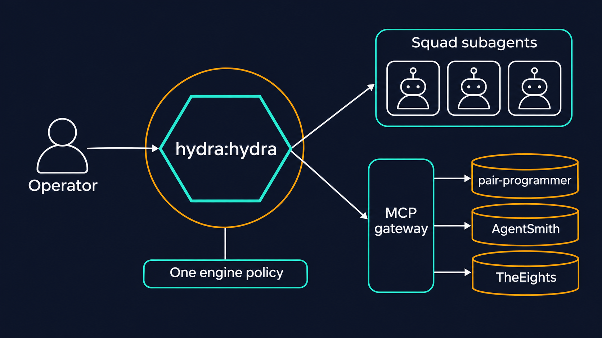
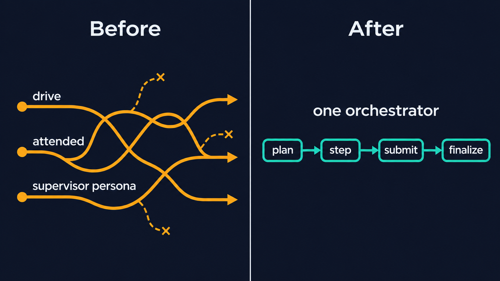
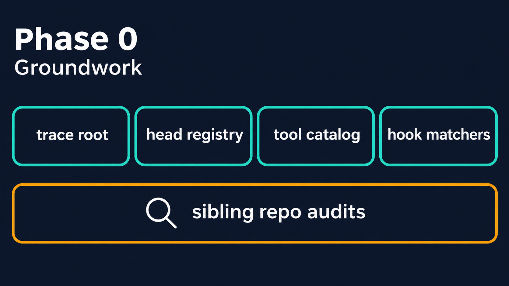
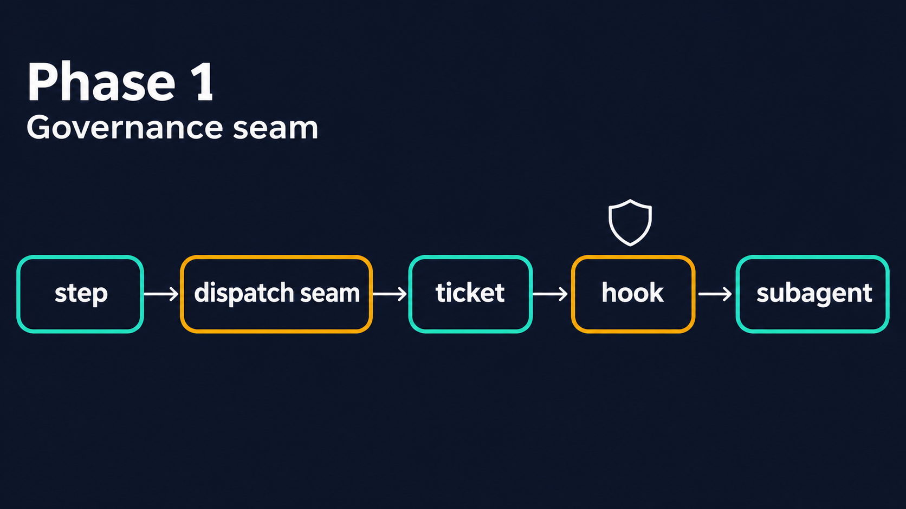
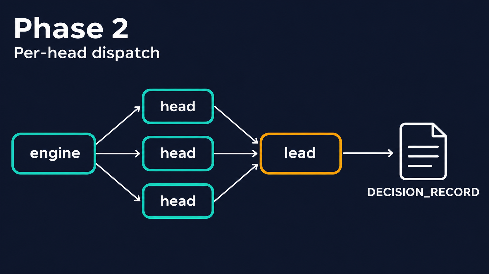
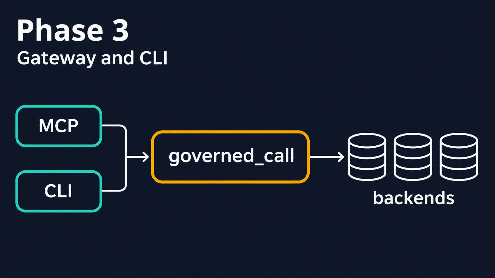
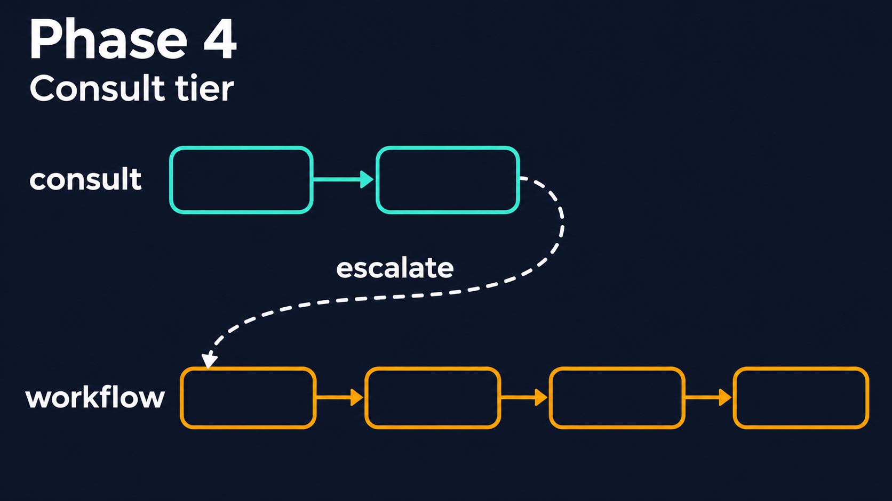
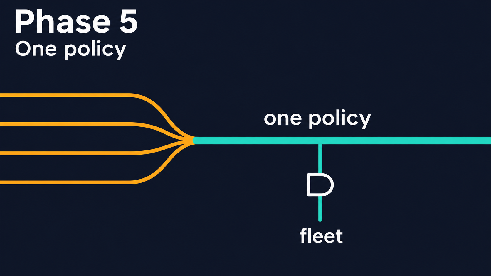
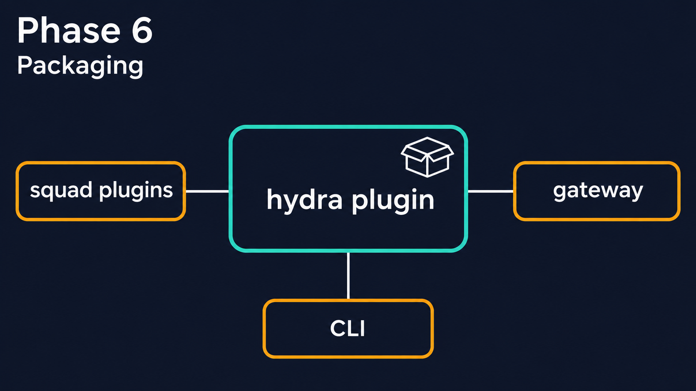

Hydra: one orchestrator, one engine policy
Implementation plan for making hydra:hydra the single orchestrator: squad heads dispatched as native subagents under one governance seam, daemon-backed systems behind a governed gateway, and every gateway tool mirrored on a CLI.

1. Context
Hydra has grown three apparent ways of operating: "drive", "attended", and the "supervisor persona". The operator wants one. He talks to hydra:hydra, which manages everything, dispatches other squads' agents as native Claude Code subagents (teammates on request), keeps the daemon-backed systems (pair-programmer, AgentSmith, TheEights) behind the MCP gateway, and exposes every gateway tool on a CLI as well.
2. What the investigation found
2.1 The "three modes" are one engine with prose on top
/hydra:driveand/hydra:runare markdown runbooks (plugins/hydra/skills/{drive,run}/SKILL.md). "Attended" is the Python engine behind the verbs they call:hydra_controlplan / step / submit_host_result / finalize(mcp_servers/hydra_control/server.py), each of which subprocessespython -m hydra_core.cli(_cmd_plancli.py:813,_cmd_attended_step:4210,_cmd_attended_submit:5993,_cmd_finalize:6355). The state machine ishydra_core/host_bridge.py(begin_stage:2298,begin_squad_stage:4235,_build_squad_prompt:4148,_apply_squad_result:4427,submit_host_result:4972).- The persona layer has no engine. Eight plugin agents are never spawned:
hydra-supervisor,hydra-router,hydra-planner,hydra-synthesizer,hydra-hitl-gate,hydra-cfo-gate,plan-critic,plan-scribe. Python does that work (classify_intent,node_planner,node_synthesis,governance.charge_and_gate,dispatch_judge).plan-criticandplan-scribeare still in thesquads/planning/squad.yamlroster. - The real divergence is four engine paths: the attended cursor; detached
run --live(cli.py:712-738, which forces trivial plan rigor); detachedingest --livebehindsubmit_envelopes(server.py:557-644, ungated); and the web cockpit launch (web/server/launch.ts:239). They differ on plan phase, per-squad judging, synthesis gates, native-pack execution, and the detached gate. HYDRA_ALLOW_DETACHEDis read at one place (server.py:294). The fleet exemption is a regex on goal text,_FLEET_GOAL_RE(server.py:297-319). Nothing sets the variable internally.- Attended finalize skips
node_judge_per_squadviaas_node(cli.py:6494-6497) and auto-drives synthesis (cli.py:6499-6509).build_supervisorsetsdrive_pp_loop=Truefor any live dispatcher (supervisor.py:664-677). - The runbooks contradict each other on
launch, on Skill-versus-Agent for squad packs, and onsubmit_envelopes.

2.2 Squad dispatch
- Seven squads are
entrypoint: claude-native(executive, garland, legal-compliance, rlm-gaming, the five marketing-* packs, planning) and already run as a plugin-scoped subagent. Only the squad lead is mapped, hardcoded inhydra_core/native_packs.py:27-56:executive-suite:boardroom,rlm-creative:calliope,senate:general-counsel,rlm-gaming:the-director,marketbliss:marketing-supervisor,hydra:plan-author. No slug-to-plugin-agent map exists for other heads. - customer-support (Xenia) is
claude-skillonly, has no plugin, and falls back togeneral-purpose. - The attended squad path lacks governance the in-graph path has: per-squad RBAC, Iolaus, validation and redaction of the outbound prompt, the tool-scope directive, and a pre-dispatch budget check. Subagent cost is self-reported. Telemetry lands in the pack's directory (
host_bridge._trace:2178). - Engineering emitted by a squad pack (a DEV_TASK) runs headless (ingest.py:895 →
_drive_pp_stage_loop), not through the visible engineer/judge cursor. - Each attended verb builds a fresh
MCPStdioDispatcher(cli.py:3545, 4241, 6387), so everystep,submitandfinalizecold-starts its own pp daemon. run_host_agentis unimplemented (dispatcher.py:526);_via_impersonationis unreachable; squad-YAMLmodel_tierandbest_of_nhave no effect on native squads.- The
AGENTS.mdsquad table is stale: it lists 14 squads withclaude-skillentrypoints; discovery reports 15 squads, 12 active, andclaude-nativeis undocumented.
2.3 Installation
- Plugins at user scope: executive-suite, senate, marketbliss, rlm-creative, rlm-gaming, hydra (0.1.7, cache stale), all from local directory marketplaces. No script installs them.
- Xenia, pair-programmer, AgentSmith and TheEights have no plugin manifest. pair-programmer is installed by symlinking
~/.claude/agentsand~/.claude/skills. AgentSmith's agents and skills are missing from disk. Nine ExecutiveSuite command symlinks dangle. engineer,judge-cross-vendor,judge-same-vendorexist both in thehydraplugin and as pair-programmer user-scope agents;host_actionuses the bare name.- The gateway is hand-registered in
~/.claude.json. The Hydra plugin ships no.mcp.jsonand nobin/. - A pair-programmer hook (
enforce-active-run,pair-programmer/daemon/src/hooks/dispatcher.ts) blocks Write/Edit in this repo unless a pp run owns the edit, the path contains.harnessor.claude, orPP_ALLOW_AD_HOC=1is set. This applies to documentation files too.
2.4 MCP versus CLI
plan,step,submit_host_result,finalize,budgetalready share one code path: the MCP tool runs the CLI (hydra_core/cli.py,main():8171).- No shell route to an arbitrary gateway tool exists.
- The gateway (
mcp_servers/hydra_gateway/server.py,AsyncBackendPool:103-526) serves 16 backends from a static catalog inhydra_core/toolshed.py(HYDRA_CONTROL_TOOLS:420,HYDRA_MEMORY_TOOLS:364,build_default_shed:1150,SCHEMA_OVERRIDES:595) plus~/.hydra/gateway_schemas.json. It enforces no RBAC, venom gate or telemetry. Its fallback route (:893-902) proxies anyserver__toolwith no catalog check. - Seven in-repo tools are not advertised:
hydra.workflow.budget,hydra.worktree.sweep_status, andhydra-mem.{ping, workflows_list, workflow_status, squad_list, hitl_pending}. - RBAC lives only in
MCPStdioDispatcher._check_tool_rbac(dispatcher.py:268-328), which fails open whensquad_idis None or the pack is unknown. The venom gate is at dispatcher.py:409-484;call_mcpat :332. - Several matchers in
plugins/hydra/hooks/hooks.jsonuse pre-gateway tool names, orTaskinstead ofAgent, and never fire. - Tests that pin current behavior:
tests/test_gateway_catalog_complete.py,tests/test_hydra_control_schema_parity.py,tests/test_fable_audit2_phase5.py:725-759,tests/test_pack_shims.py:215.
2.5 Claude Code host capabilities that shape the design
These are host-interface capabilities. None of them replaces Hydra's typed state, governance or execution protocol; the right column names the Hydra component that stays authoritative. Sources are in section 10.
| Host capability | What it gives the design | Hydra component that stays authoritative |
|---|---|---|
Plugin agents spawn by scoped name from the Agent tool, a workflow (agentType), or as teammates. Their hooks, mcpServers, permissionMode and initialPrompt frontmatter is ignored. | Heads can be dispatched natively. Governance cannot live in the pack's agent file. | Head registry and dispatch seam (hydra_core/head_registry.py, dispatch_seam.py); Hydra plugin hooks |
The main-thread agent can restrict spawnable types with tools: Agent(a, b). | hydra:hydra can spawn only registered heads and engine agent types. | Head registry generates the list |
Hooks on PreToolUse/PostToolUse for Agent, plus SubagentStart/SubagentStop, can deny, rewrite the prompt (updatedInput) and read usage. onFailure: "block" fails closed. | A fail-closed checkpoint on every subagent spawn. | Ticket store and budget ledger in the engine; the hook only enforces what the engine wrote |
Agent teams experimental: not restored on /resume, one team per session, in-process only on Windows; while enabled, a named subagent becomes a teammate. | Opt-in for deliberation steps only. | Workflow state and dissent record stay in the engine checkpoint |
| Dynamic workflows take no user input mid-run. | Usable only for gate-free fan-out (audits). They cannot span a HITL gate. | HITL gates (/hydra:approve, /hydra:resume) |
Plugin bin/ is on the Bash tool PATH. Plugin .mcp.json names tools mcp__plugin_<plugin>_<server>__<tool>. Plugin dependencies resolve from git tags. | Where the CLI ships; a tool-name prefix change to plan for; how packs become dependencies. | governed_call (RBAC, venom gate, telemetry) |
| Channels research preview. | Not used by this plan. | n/a |
3. Operator decisions
- The engine names each head. One
host_actionper head; per-head budget, RBAC, trace and dissent. - Subagents by default. Agent teams only when a workflow calls for deliberation or the operator asks.
- Two tiers: a governed lightweight "consult" and the full workflow.
- CLI: generic
hydra tool list|describe|callgenerated from the gateway catalog, plus curated commands for Hydra's own verbs; shipped in pluginbin/. - Delete the six dead
hydra-*persona agents.hydra:hydrais the only supervisor. (Revised 2026-11-14: originally eight. The Covenant-generatedplan-criticandplan-scribestay as they are for now: not deleted, not wired.) - One policy; detached execution only for the fleet and explicit automation, gate enforced in the engine.
- Pack-emitted engineering runs through the visible engineer/judge cursor.
- Every squad pack becomes a proper plugin; Hydra declares them as dependencies and ships the gateway and CLI. In the operator's words, "each of the squad pack repos needs proper investigate and rca and planning for alignment". None is changed before that.
4. Target shape
- One orchestrator.
hydra:hydrais the only supervisor agent. Itstools:lists the spawnable agent types, generated from the head registry. - One engine path for interactive work.
plan → step → submit_host_result → finalize.stepreturns onehost_actionper head (plugin-scoped agent name), then one for the squad lead's synthesis. Engineering, whether requested directly or emitted by a pack, uses the same visible engineer/judge cursor. - One governance seam for every subagent dispatch.
- Engine side (
hydra_core/dispatch_seam.py, atstepand at consult open): pre-dispatch budget check, redaction of the outbound prompt, tool-scope directive, and a dispatch ticket on disk. - Hook side (one entry point, fail-closed): a squad, engineer or judge agent may spawn only against a live ticket; the prompt is replaced from the ticket; token usage is captured from the tool response, replacing self-reported cost.
- Gateway side: the hook stamps each gateway call with the caller's ticket; the gateway resolves ticket to squad and enforces RBAC and the venom gate. A missing stamp is denied.
- Engine side (
- Consult tier. The orchestrator spawns a head directly. The hook opens and closes a consult: read-only tool scope, budget charged exactly once, a
ConsultNoteenvelope validated at open and close, its own trace. It escalates to a workflow on any write attempt, spend over threshold, a second squad, emitted envelopes, a venom-class tool, or any engineer or judge type. - One call path for MCP and CLI.
governed_call(server, tool, args, ctx)inhydra_core/gateway_runtime.pyis used by the gateway, byhydra tool call, and by the dispatcher. The CLI connects to the running gateway through a loopback broker so it does not fork duplicate daemons. - Detached is the exception. Only the fleet (two or more resolved repo ids) and explicit automation, gated in the engine, under the same plan, judge and budget policy.
- Agent teams experimental stay off by default in Hydra sessions and are enabled only for a workflow step marked as deliberation, or on request.
- Dynamic workflows are used only for gate-free fan-out: the sibling-repo audit, catalog and doctor audits. Never for the step/submit loop, engineering, or anything with a gate.
5. Workstreams
All engine source is written by the pair-programmer harness through Hydra workflows. Each row is one DEV_TASK-sized change. Each acceptance test must fail when the change is reverted. The Issue column links the GitHub issue for the row.
Phase 0: safe groundwork (parallel, starts first)

| ID | Change | Files and reuse | Acceptance | Issue |
|---|---|---|---|---|
| W0.1 | Squad cursor traces to the Hydra project, not the pack directory. | hydra_core/host_bridge.py (_trace :2178, begin_squad_stage :4235) | A squad cursor with a different pack cwd emits to the project trace. | pending |
| W0.2 | Head registry: (squad, head) → plugin:agent, resolved from the native_packs.py override, then the agent_file stem, then the slug. Doctor validates files and frontmatter names. | new hydra_core/head_registry.py; native_packs.py; cli.py doctor. Reuse squad_loader.resolve_agent_file_path, cli._agent_frontmatter_name. | Every head in every discovered pack resolves to an existing agent file. garland and rlm-gaming fail without the stem rule. | pending |
| W0.3 | In-repo catalogs derived from server registries; advertise the seven missing tools. | hydra_core/toolshed.py; mcp_servers/hydra_control/server.py; mcp_servers/hydra_memory/server.py; update tests/test_hydra_control_schema_parity.py | Registry equals catalog. An uncatalogued handler fails the test. | pending |
| W0.4 | Fix hook matchers: gateway-prefixed tool names, Agent not Task. | plugins/hydra/hooks/hooks.json, iolaus_check.py, iolaus_log.py | Every matcher matches at least one real tool name. | pending |
| W0.5 | Sibling-repo investigations, read-only: ExecutiveSuite, Senate, MarketBliss, RLM-Creative, RLM-Gaming, Xenia, pair-programmer, AgentSmith, TheEights. | new plugins/hydra/workflows/sibling-audit.js (a gate-free dynamic workflow) | Nine reports, each with findings, root causes and an alignment plan. No repo changed. | pending |
Phase 1: seams, in audit mode

| ID | Change | Files and reuse | Acceptance | Issue |
|---|---|---|---|---|
| W1.1 | Lift redaction, RBAC and venom checks to module functions; add a strict RBAC mode. | hydra_core/supervisor.py:704; dispatcher.py:268-484; new hydra_core/boundary.py | Existing suites unchanged. Strict mode denies an unknown squad. | pending |
| W1.2 | Dispatch seam and ticket at step. | new hydra_core/dispatch_seam.py; cli.py:4661-4741. Reuse governance.should_block_for_budget, redact_for_squad_boundary, tool_scope.build_tool_scope_directive. | The squad prompt is redacted and carries the scope directive. Over budget returns budget_blocked with no cursor. | pending |
| W1.3 | Agent hooks: log would-deny, replace prompt from ticket, capture usage. | new plugins/hydra/hooks/hydra_hook.py; hooks.json | Hook unit tests on recorded payloads. | pending |
| W1.4 | Pack-emitted engineering queues as an attended task (status queued_attended) instead of running inline. | hydra_core/ingest.py:852-910; cli.py:5626-5760 | After submit, an engineering task is pending and step returns engineer. pp_harness.start_run is not called during submit. | pending |
| W1.5 | Explicit execution_mode on build_supervisor; attended no longer auto-sets drive_pp_loop. Lands with or after W1.4. | supervisor.py:597-677, :2866; cli.py:3545 | An attended supervisor defers an engineering task at node_dispatch. | pending |
Phase 2: per-head dispatch (needs W0.2, W1.2)

| ID | Change | Files and reuse | Acceptance | Issue |
|---|---|---|---|---|
| W2.1 | One cursor per head leg (run_id = task.head), then a lead-synthesis leg. TaskState.heads (empty means lead-only, unchanged behavior). Head results go in a merge-reducer channel. | host_bridge.py:4235; cli.py step and submit; state.py | Three heads plus lead give four cursors and four charges. The task completes only after the lead. A duplicate submit is not re-charged. | pending |
| W2.2 | Head dissents always reach the DECISION_RECORD. | cli.py:_materialize_attended_results. Reuse hydra_core/deliberation.py. | A head dissent appears even when the lead omits it. | pending |
| W2.3 | PlanStep.heads, validated against the registry at PLAN ingest. | schemas.py:332; supervisor.py materialise_plan_steps; ingest.py | An unknown head rejects the plan. | pending |
| W2.4 | Parallel host_actions in the step response. | cli.py step | Out-of-order submits converge. | pending |
| W2.5 | Delete the six dead hydra-* persona agents (hydra-supervisor, hydra-router, hydra-planner, hydra-synthesizer, hydra-hitl-gate, hydra-cfo-gate). Leave covenant/, plugins/hydra/.claude/agents/plan-* and the planning roster untouched. Generate hydra.md tools: Agent(...) from the registry. | plugins/hydra/agents/*; squads/planning/squad.yaml; skills/plan/SKILL.md; hydra.md | Doctor: every plugin agent is in the registry or an engine agent_type set. | pending |
The clearing gotcha from earlier work applies to W2.1: clearing a plain HydraState field durably needs update[key]=<empty> in the node patch, and tests must model replay as a channel merge.
Phase 3: gateway governance and CLI mirror (needs W1.1)

| ID | Change | Files and reuse | Acceptance | Issue |
|---|---|---|---|---|
| W3.1 | governed_call; fallback route restricted to the catalog. | new hydra_core/gateway_runtime.py; mcp_servers/hydra_gateway/server.py; update tests/test_fable_audit2_phase5.py | Gateway and CLI return identical payloads for RBAC-deny, venom-refuse and no-daemons. | pending |
| W3.2 | Caller identity stamp (_hydra_ctx) on gateway calls: audit, add baseline grants for each pack's own shim and read-only memory, then enforce. | hydra_hook.py; gateway | A missing stamp is denied. A ticket bound to another agent is denied. | pending |
| W3.3 | hydra tool list|describe|call over a loopback broker. | cli.py:8171; gateway_runtime.py; new plugins/hydra/bin/hydra | No stdio spawn when the broker is present. | pending |
| W3.4 | Curated verbs for the CLI gaps. Gate-clearing tools require operator capability. Deny gate-clearing commands from the agent's Bash. Move the operator key out of ambient env. | cli.py. Reuse hydra_core/auth/capability.py. | Any tool named approve, resolve, release, reset, unlock or commit must be classified. | pending |
| W3.5 | Attended verbs use the broker (BrokerDispatcher): one pp daemon per session. | cli.py:3545 | One pp daemon across step, submit and finalize (live_daemon mark). | pending |
Phase 4: consult tier (needs phases 1 and 3)

| ID | Change | Files and reuse | Acceptance | Issue |
|---|---|---|---|---|
| W4.1 | hydra consult open|close|list, session ledger, ConsultNote envelope. | new hydra_core/consult.py; schemas.py; cli.py; hydra_control/server.py | A double close charges once. One test per escalation trigger. | pending |
| W4.2 | Consult hooks: open on an unticketed eligible head, deny writes. | hydra_hook.py | A write inside a consult agent is denied. | pending |
Phase 5: one policy (needs W1.4)

| ID | Change | Files and reuse | Acceptance | Issue |
|---|---|---|---|---|
| W5.1 | Engine-level detached gate. Fleet defined structurally via repo_registry.parse_repos_arg. Remove the goal-text regex. | new hydra_core/detached_policy.py; cli.py:712; hydra_control/server.py:287-319, :647 | cli run --live without authorization is refused. | pending |
| W5.2 | Detached runs no longer force trivial plan rigor. | cli.py:737; supervisor.py:1633 | A detached non-trivial run without an approved plan surfaces plan_required. | pending |
| W5.3 | Attended finalize runs the per-squad judge; one shared drive_tail that never passes a pending gate. | cli.py:6494-6509 | A squad record gets a verdict row. | pending |
| W5.4 | Cockpit launch goes through the gated path. | web/server/launch.ts | Launch handles engine refusal. | pending |
Phase 6: packaging (after the W0.5 reports are reviewed)

The per-repo alignment plans decide the detail. Expected: plugin manifests for Xenia, pair-programmer and AgentSmith; the Hydra plugin ships .mcp.json and bin/ and declares dependencies; one marketplace. Gateway tool names change prefix (to mcp__plugin_<plugin>_<server>__<tool>), so every matcher, agent file and doc must accept both prefixes before the switch. The bare-name collision on engineer and the judges is resolved here. Issue: pending.
Runbooks and docs (alongside the phase that makes them true)
- Merge
skills/driveintoskills/run; rewriteskills/campaignto match. - Fix the text in
hydra-route-directive.ps1andhydra-session-contract.ps1. - Update the
AGENTS.mdsquad table,ARCHITECTURE.md,HYDRA.md,CONTRIBUTING-SQUADS.md,docs/MCP_SETUP.md. - Follow
.claude/rules/documentation.md: describe Claude Code features as host-interface capabilities, name the Hydra component that stays authoritative, mark experimental features, cite sources.
Issue: pending.
6. Needs operator sign-off when reached
- Added after merging
main(PRs #76, #77). The three plan agents now live inplugins/hydra/.claude/agents/and are generated bycov buildfromcovenant/plan-*.cov;covenant/plan.covdeclares an author → critic → scribe flow that the engine does not call (docs/covenant-pilot.md). W2.5 and decision 5 originally deletedplan-criticandplan-scribe, which conflicted with that pilot. Decided 2026-11-14: the Covenant agents stay and are not touched for now, neither deleted nor wired into the engine; W2.5 deletes only the sixhydra-*persona agents. The doctor check in W2.5 must therefore exempt the two unspawned plan agents. AGENTS.mdrule 9 citesplugins/hydra/agents/hydra-supervisor.md§ Engineering Execution Contract. Deleting that agent needs the citation and the contract text moved (W2.5).CLAUDE.mdsays "ALL productive work MUST flow through Hydra". The consult tier needs wording there (W4.1).- Rule 3 (no raw blobs across squads) is only partly protected in a consult: the orchestrator holds the raw answer. Mitigations are redaction, a returned MemoryRef, and escalation on a second squad.
- Detached fleet runs that work today will park until planned (W5.2).
CONSTITUTION.md is not touched by any workstream. A change that appears to need it stops as a HITL with reason constitution_breach.7. Assumptions and unverified points
CLAUDE_CODE_EXPERIMENTAL_AGENT_TEAMSis set to0for Hydra sessions by default and turned on per deliberation step. It is currently1in user settings.- Unverified, to test before building on them:
- whether plugin hooks fire for workflow
agent()spawns; - the
PostToolUsepayload shape for teammates; - which
engineerdefinition a bare name resolves to today.
- whether plugin hooks fire for workflow
- Subagent nesting depth was reported inconsistently during research. W2.1 does not depend on nesting: every head is spawned by
hydra:hydradirectly.
8. Verification
- Per workstream: the acceptance test in its row, plus its negative (revert the change, the test fails), then the full
pytestsuite (hermetic,HYDRA_TEST_NO_DAEMONS=1). - End to end after phase 2:
/hydra:runan executive goal naming three heads. Expect three visibleexecutive-suite:*subagents, thenboardroom, four charges in the ledger, dissents in theDECISION_RECORD, and the trace under<Hydra>/.hydra/<wf>/. - After phase 1: a pack-emitted DEV_TASK shows a visible
engineerand judge. - After phase 3:
hydra tool call hydra_control hydra.squad.listand the MCP tool return the same payload; a squad subagent calling a tool outside itssquad.yamlallow-list is denied;hydra doctorreports no catalog drift. - After phase 4: "ask the CFO ..." returns an answer with one consult charge and no workflow; a consult that tries to write is denied and escalates.
- After phase 5:
python -m hydra_core.cli run --live "<goal>"is refused without automation authorization; a two-repo fleet run produces aDECISION_RECORDwith per-squad verdicts.
9. How to implement
- Work from the GitHub issues; each one restates its row here with dependencies by issue number.
- Route every workstream through
/hydra:runwith the issue title and number as the goal. Engineering is the attended cursor: the engine returns the agent type, the host spawns only that type. Do not hand-write engine source and do not invoke/pp:*directly. - Start phase 0 workstreams in any order; they do not depend on each other. W0.5 is a read-only dynamic workflow and can run alongside.
- Phase 1 lands in audit mode: hooks log what they would deny. Switch to enforcement per seam only after a clean audit window.
- Respect the edges in figure 9. W1.5 lands with or after W1.4. Phase 4 waits for phases 1 and 3. Phase 6 waits for the operator's review of the W0.5 reports.
- For every change: write the acceptance test, show it fail with the change reverted, then run the full suite. Report with the test output, trace state and artifact paths.
- Stop at every HITL gate and at each item in section 6.
Known environment constraints: in attended-run worktrees the permission layer blocks python and pytest (verify by static trace and hand the operator the command); codex exec hangs as a background task (run it in the foreground with a timeout); the pp enforce-active-run hook blocks ad-hoc Write/Edit.
10. Sources
- Repo investigation: file and line references in section 2 are from
lebobo88/Hydra, branchfix/known-issues-2026-09-25atb2c85b3. Line numbers drift; search by symbol name. Re-checked after mergingorigin/main(merge12c7f65): the only finding that changed is the location and generation of the plan agents, recorded in section 6. - Claude Code documentation (host-interface behavior): sub-agents, hooks, plugins reference, agent teams (experimental), MCP. Read during planning on 2026-11-14; re-check before relying on a detail.
- Contract:
AGENTS.md,CLAUDE.md,.claude/rules/*,CONSTITUTION.md(read-only).